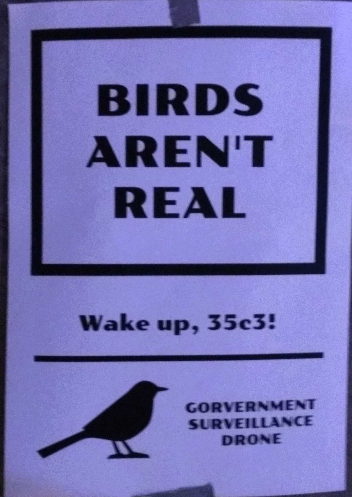

Birds Aren't Real
The "Birds Aren't Real" conspiracy theory is a satirical movement that claims all birds are government surveillance drones. Originating in 2017, the movement was created by Peter McIndoe as a parody of conspiracy culture. It suggests that real birds were exterminated by the U.S. government starting in the mid-20th century and replaced with robotic replicas equipped with surveillance technology. While the movement's narrative often employs absurdity—such as the claim that birds recharge by perching on power lines—it serves as a social commentary on the spread of misinformation and the susceptibility of people to believe unverified theories.
At its core, the "Birds Aren't Real" movement is a form of modern performance art, blending humor and satire to engage with conspiracy theorists and highlight the ease with which ideas, no matter how implausible, can gain traction. Supporters of the movement organize rallies, create merchandise, and spread their messages online, often in a tongue-in-cheek manner. The movement's founder has openly admitted that it was designed to parody the real dangers of disinformation, especially in an age where conspiracy theories can rapidly influence public opinion.
Despite its comedic intentions, the movement has sparked both amusement and concern. Many people see it as an entertaining critique of conspiracy culture, while others misunderstand its satirical nature and take the claims literally. The movement raises important questions about the role of satire in addressing serious issues like disinformation and public gullibility. By crafting an elaborate and humorous conspiracy, "Birds Aren't Real" encourages people to question the validity of the information they encounter and consider the broader implications of accepting ideas without critical thought.